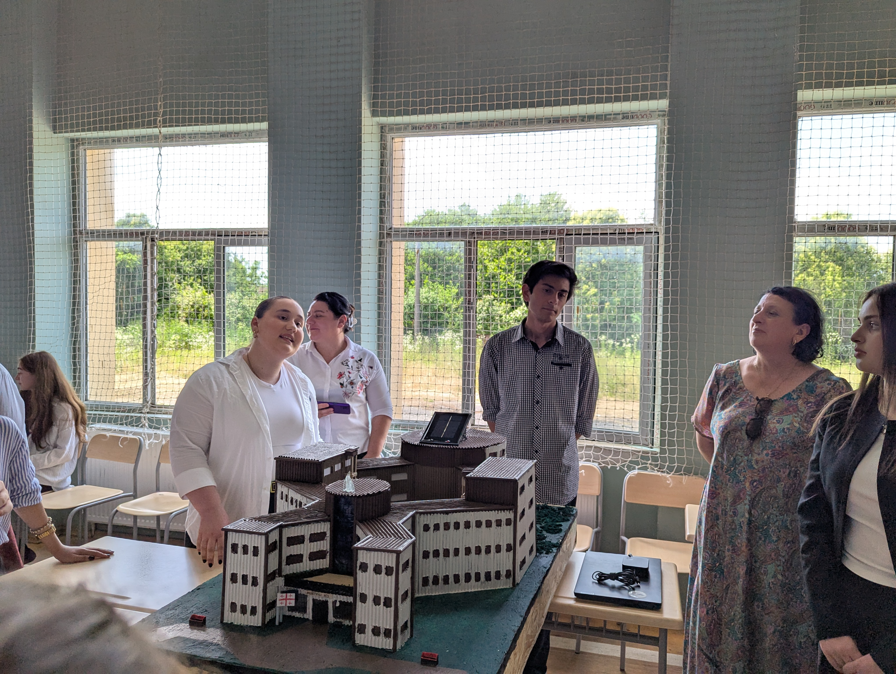
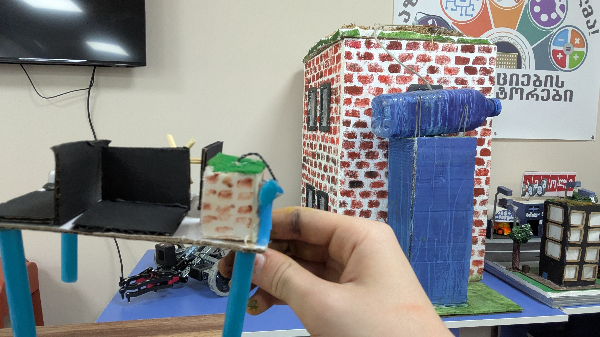
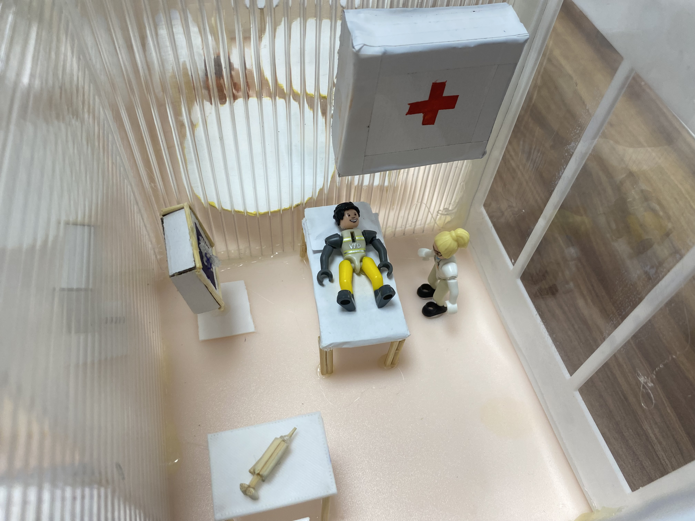

საჭიროებების გააზრება
სკოლის სივრცის დაგეგმვა მოსწავლის გამოცდილებიდან.
ინოვაციების ინკუბატორები / პროექტი 12
მომავლის სკოლა
მომავლის სკოლის კამპუსის პროტოტიპი — მოსწავლეზე ორიენტირებული სივრცეები, 3D ბეჭდვა და ტექნოლოგიური იდეები.

პროექტის შესახებ
პროექტის მიზანია მომავლის სკოლის ისეთი მაკეტის შექმნა, რომელიც აერთიანებს ეკოლოგიურ, ინკლუზიურ და მოსწავლეზე ორიენტირებულ გარემოს. მონაწილეები მუშაობდნენ იდეების ჩამოყალიბებაზე, დიზაინის შერჩევასა და პროტოტიპის აწყობაზე.
მაკეტი ნაწილობრივ ხელით, ნაწილობრივ კი 3D პრინტერით დამზადებული დეტალებით შეიქმნა. დიზაინში წარმოდგენილია სასწავლო, სამუშაო და დასასვენებელი სივრცეები, სკოლის ეზო და ტექნოლოგიური ელემენტები.
პროექტის კონცეფციაში განხილულია განახლებადი ენერგია, სენსორები, სივრცეების ხელმისაწვდომობა და უსაფრთხოება. ეს იდეები წარმოდგენილია სასწავლო პროტოტიპში და არ ნიშნავს მათ უკვე დანერგვას რეალურ სკოლის შენობაში.
სკოლის სივრცის დაგეგმვა მოსწავლის გამოცდილებიდან.
მოდელირება, ხელით მუშაობა და 3D ბეჭდვა.
დეტალების შემოწმება და დიზაინის დახვეწა.
პროექტის ალბომი
რეალური კადრები
კლუბის არქივიდან.

